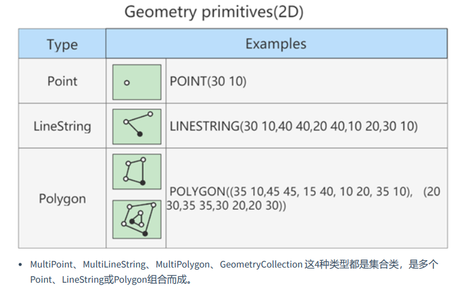

1.MySQL中的数据类型
| 类型 | 类型举例 |
|---|---|
| 整数类型 | TINYINT、SMALLINT、MEDIUMINT、INT(或INTEGER)、BIGINT |
| 浮点类型 | FLOAT、DOUBLE |
| 定点数类型 | DECIMAL |
| 位类型 | BIT |
| 日期时间类型 | YEAR、TIME、DATE、DATETIME、TIMESTAMP |
| 文本字符串类型 | CHAR、VARCHAR、TINYTEXT、TEXT、MEDIUMTEXT、LONGTEXT |
| 枚举类型 | ENUM |
| 集合类型 | SET |
| 二进制字符串类型 | BINARY、VARBINARY、TINYBLOB、BLOB、MEDIUMBLOB、LONGBLOB |
| JSON类型 | JSON对象、JSON数组 |
| 空间数据类型 | 单值类型：GEOMETRY、POINT、LINESTRING、POLYGON； 集合类型：MULTIPOINT、MULTILINESTRING、MULTIPOLYGON、 GEOMETRYCOLLECTION |
常见数据类型的属性，如下：
| MySQL关键字 | 含义 |
|---|---|
| NULL | 数据列可包含NULL值 |
| NOT NULL | 数据列不允许包含NULL值 |
| DEFAULT | 默认值 |
| PRIMARY KEY | 主键 |
| AUTO_INCREMENT | 自动递增，适用于整数类型 |
| UNSIGNED | 无符号 |
| CHARACTER SET name | 指定一个字符集 ，如utf8 |
2. 整数类型
2.1 类型介绍
整数类型一共有 5 种，包括 TINYINT、SMALLINT、MEDIUMINT、INT（INTEGER）和 BIGINT。 它们的区别如下表所示：
| 整数类型 | 字节 | 有符号数取值范围 | 无符号数取值范围 |
|---|---|---|---|
| TINYINT | 1 | -128~127 | 0~255 |
| SMALLINT | 2 | -32768~32767 | 0~65535 |
| MEDIUMINT | 3 | -8388608~8388607 | 0~16777215 |
| INT、INTEGER | 4 | -2147483648~2147483647 | 0~4294967295 |
| BIGINT | 8 | -9223372036854775808~9223372036854775807 | 0~18446744073709551615 |
2.2 可选属性
整数类型的可选属性有三个：
2.2.1 M
M : 表示显示宽度，M的取值范围是(0, 255)。例如，int(5)：当数据宽度小于5位的时候在数字前面需要用 字符填满宽度。该项功能需要配合ZEROFILL使用，表示用“0”填满宽度，否则指定显示宽度无效。 如果设置了显示宽度，那么插入的数据宽度超过显示宽度限制，会不会截断或插入失败？ 答案：不会对插入的数据有任何影响，还是按照类型的实际宽度进行保存，即 显示宽度与类型可以存储的 值范围无关 。
从MySQL 8.0.17开始，整数数据类型不推荐使用显示宽度属性。 整型数据类型可以在定义表结构时指定所需要的显示宽度，如果不指定，则系统为每一种类型指定默认 的宽度值。
举例：
CREATE TABLE test_int1 ( x TINYINT, y SMALLINT, z MEDIUMINT, m INT, n BIGINT );
查看表结构 （MySQL8中不再显式范围）
mysql> desc test_int1;
+-------+-----------+------+-----+---------+-------+
| Field | Type | Null | Key | Default | Extra |
+-------+-----------+------+-----+---------+-------+
| x | tinyint | YES | | NULL | |
| y | smallint | YES | | NULL | |
| z | mediumint | YES | | NULL | |
| m | int | YES | | NULL | |
| n | bigint | YES | | NULL | |
+-------+-----------+------+-----+---------+-------+
5 rows in set
TINYINT有符号数和无符号数的取值范围分别为-128~127和0~255，由于负号占了一个数字位，因此 TINYINT默认的显示宽度为4。同理，其他整数类型的默认显示宽度与其有符号数的最小值的宽度相同。
2.2.2 UNSIGNED
UNSIGNED : 无符号类型（非负），所有的整数类型都有一个可选的属性UNSIGNED（无符号属性），无 符号整数类型的最小取值为0。所以，如果需要在MySQL数据库中保存非负整数值时，可以将整数类型设 置为无符号类型。
int类型默认显示宽度为int(11)，无符号int类型默认显示宽度为int(10)。
CREATE TABLE test_int3(
f1 INT UNSIGNED
);
mysql> desc test_int3;
+-------+--------------+------+-----+---------+-------+
| Field | Type | Null | Key | Default | Extra |
+-------+--------------+------+-----+---------+-------+
| f1 | int unsigned | YES | | NULL | |
+-------+--------------+------+-----+---------+-------+
1 row in set
2.2.3 ZEROFILL
ZEROFILL : 0填充,（如果某列是ZEROFILL，那么MySQL会自动为当前列添加UNSIGNED属性），如果指 定了ZEROFILL只是表示不够M位时，用0在左边填充，如果超过M位，只要不超过数据存储范围即可。
原来，在 int(M) 中，M 的值跟 int(M) 所占多少存储空间并无任何关系。 int(3)、int(4)、int(8) 在磁盘上都 是占用 4 bytes 的存储空间。也就是说，int(M)，必须和UNSIGNED ZEROFILL一起使用才有意义。如果整 数值超过M位，就按照实际位数存储。只是无须再用字符 0 进行填充。
2.3 适用场景
TINYINT ：一般用于枚举数据，比如系统设定取值范围很小且固定的场景。
SMALLINT ：可以用于较小范围的统计数据，比如统计工厂的固定资产库存数量等。
MEDIUMINT ：用于较大整数的计算，比如车站每日的客流量等。
INT、INTEGER ：取值范围足够大，一般情况下不用考虑超限问题，用得最多。比如商品编号。
BIGINT ：只有当你处理特别巨大的整数时才会用到。比如双十一的交易量、大型门户网站点击量、证 券公司衍生产品持仓等。
2.4 如何选择？
在评估用哪种整数类型的时候，你需要考虑 存储空间 和 可靠性 的平衡问题：一方面，用占用字节数少 的整数类型可以节省存储空间；另一方面，要是为了节省存储空间， 使用的整数类型取值范围太小，一 旦遇到超出取值范围的情况，就可能引起 系统错误 ，影响可靠性。
举个例子，商品编号采用的数据类型是 INT。原因就在于，客户门店中流通的商品种类较多，而且，每天都有旧商品下架，新商品上架，这样不断迭代，日积月累。 如果使用 SMALLINT 类型，虽然占用字节数比 INT 类型的整数少，但是却不能保证数据不会超出范围 65535。相反，使用 INT，就能确保有足够大的取值范围，不用担心数据超出范围影响可靠性的问题。 你要注意的是，在实际工作中，系统故障产生的成本远远超过增加几个字段存储空间所产生的成本。因 此，我建议你首先确保数据不会超过取值范围，在这个前提之下，再去考虑如何节省存储空间。
3. 浮点类型
3.1 类型介绍
浮点数和定点数类型的特点是可以处理小数 ，你可以把整数看成小数的一个特例。因此，浮点数和定点 数的使用场景，比整数大多了。 MySQL支持的浮点数类型，分别是 FLOAT、DOUBLE、REAL。
- FLOAT 表示单精度浮点数；
- DOUBLE 表示双精度浮点数；
| 类型 | 有符号数范围 | 无符号数取值范围 | 占用字节数 |
|---|---|---|---|
| FLOAT | (-3.40E+38，-1.17E-38)，0，(1.17E-38，3.40E+38) | 0，(1.17E-38，3.40E+38) | 4 |
| DOUBLE | (-1.79E+308，-2.25E-308)，0，(2.25E-308，1.79E+308) | 0，(2.25E-308，1.79E+308) | 8 |
REAL默认就是 DOUBLE。如果你把 SQL 模式设定为启用“ REAL_AS_FLOAT ”，那么，MySQL 就认为 REAL 是 FLOAT。如果要启用“REAL_AS_FLOAT”，可以通过以下 SQL 语句实现：
SET sql_mode = “REAL_AS_FLOAT”;
问题1：FLOAT 和 DOUBLE 这两种数据类型的区别是啥呢？
FLOAT 占用字节数少，取值范围小；DOUBLE 占用字节数多，取值范围也大。
问题2：为什么浮点数类型的无符号数取值范围，只相当于有符号数取值范围的一半，也就是只相当于 有符号数取值范围大于等于零的部分呢？
MySQL 存储浮点数的格式为： 符号(S) 、 尾数(M) 和 阶码(E) 。因此，无论有没有符号，MySQL 的浮 点数都会存储表示符号的部分。因此， 所谓的无符号数取值范围，其实就是有符号数取值范围大于等于 零的部分。
3.2 数据精度说明
对于浮点类型，在MySQL中单精度值使用 4 个字节，双精度值使用 8 个字节。
- MySQL允许使用 非标准语法 （其他数据库未必支持，因此如果涉及到数据迁移，则最好不要这么 用）： FLOAT(M,D) 或 DOUBLE(M,D) 。这里，M称为 精度 ，D称为标度 。(M,D)中 M=整数位+小数 位，D=小数位。 D<=M<=255，0<=D<=30。 例如，定义为FLOAT(5,2)的一个列可以显示为-999.99-999.99。如果超过这个范围会报错。
- FLOAT和DOUBLE类型在不指定(M,D)时，默认会按照实际的精度（由实际的硬件和操作系统决定） 来显示。
- 说明：浮点类型，也可以加 UNSIGNED ，但是不会改变数据范围，例如：
FLOAT(3,2) UNSIGNED仍然 只能表示0-9.99的范围。 - 不管是否显式设置了精度(M,D)，这里MySQL的处理方案如下：
- 如果存储时，整数部分超出了范围，MySQL就会报错，不允许存这样的值 如果存储时，小数点部分若超出范围，就分以下情况：
- 若四舍五入后，整数部分没有超出范围，则只警告，但能成功操作并四舍五入删除多余 的小数位后保存。例如在FLOAT(5,2)列内插入999.009，近似结果是999.01。
- 若四舍五入后，整数部分超出范围，则MySQL报错，并拒绝处理。如FLOAT(5,2)列内插入 999.995和-999.995都会报错。
- 如果存储时，整数部分超出了范围，MySQL就会报错，不允许存这样的值 如果存储时，小数点部分若超出范围，就分以下情况：
- 从MySQL 8.0.17开始，FLOAT(M,D) 和DOUBLE(M,D)用法在官方文档中已经明确不推荐使用，将来可能被移除。另外，关于浮点型FLOAT和DOUBLE的UNSIGNED也不推荐使用了，将来也可能被移除。
CREATE TABLE test_double1(
f1 FLOAT,
f2 FLOAT(5,2),
f3 DOUBLE,
f4 DOUBLE(5,2)
);
DESC test_double1;
INSERT INTO test_double1
VALUES(123.456,123.456,123.4567,123.45);
#Out of range value for column 'f2' at row 1
INSERT INTO test_double1
VALUES(123.456,1234.456,123.4567,123.45);
SELECT * FROM test_double1;
3.3 精度误差说明
浮点数类型有个缺陷，就是不精准。下面我来重点解释一下为什么 MySQL 的浮点数不够精准。比如，我 们设计一个表，有f1这个字段，插入值分别为0.47,0.44,0.19，我们期待的运行结果是：0.47 + 0.44 + 0.19 = 1.1。而使用sum之后查询：
CREATE TABLE test_double2(
f1 DOUBLE
);
INSERT INTO test_double2
VALUES(0.47),(0.44),(0.19);
SELECT SUM(f1) FROM test_double2;
+--------------------+
| SUM(f1) |
+--------------------+
| 1.0999999999999999 |
+--------------------+
1 row in set
SELECT SUM(f1) = 1.1,1.1 = 1.1 FROM test_double2;
+---------------+-----------+
| SUM(f1) = 1.1 | 1.1 = 1.1 |
+---------------+-----------+
| 0 | 1 |
+---------------+-----------+
1 row in set
查询结果是 1.0999999999999999。看到了吗？虽然误差很小，但确实有误差。 你也可以尝试把数据类型 改成 FLOAT，然后运行求和查询，得到的是， 1.0999999940395355。显然，误差更大了。
那么，为什么会存在这样的误差呢？问题还是出在 MySQL 对浮点类型数据的存储方式上。
MySQL 用 4 个字节存储 FLOAT 类型数据，用 8 个字节来存储 DOUBLE 类型数据。无论哪个，都是采用二进制的方式来进行存储的。比如 9.625，用二进制来表达，就是 1001.101，或者表达成 1.001101×2^3。如果尾数不是 0 或 5（比如 9.624），你就无法用一个二进制数来精确表达。进而，就只好在取值允许的范 围内进行四舍五入。
在编程中，如果用到浮点数，要特别注意误差问题，因为浮点数是不准确的，所以我们要避免使用“=”来 判断两个数是否相等。同时，在一些对精确度要求较高的项目中，千万不要使用浮点数，不然会导致结 果错误，甚至是造成不可挽回的损失。那么，MySQL 有没有精准的数据类型呢？当然有，这就是定点数类型： DECIMAL 。
4. 定点数类型
4.1 类型介绍
MySQL中的定点数类型只有 DECIMAL 一种类型。
| 数据类型 | 字节数 | 含义 |
|---|---|---|
| DECIMAL(M,D),DEC,NUMERIC | M+2字节 | 有效范围由M和D决定 |
使用 DECIMAL(M,D) 的方式表示高精度小数。其中，M被称为精度，D被称为标度。0<=M<=65， 0<=D<=30，D被称为标度。0<=M<=65，0<=D<=30，D<M。
例如，定义DECIMAL（5,2）的类型，表示该列取值范围是-999.99~999.99。
DECIMAL(M,D)的最大取值范围与DOUBLE类型一样，但是有效的数据范围是由M和D决定的。 DECIMAL 的存储空间并不是固定的，由精度值M决定，总共占用的存储空间为M+2个字节。也就是 说，在一些对精度要求不高的场景下，比起占用同样字节长度的定点数，浮点数表达的数值范围可 以更大一些。
定点数在MySQL内部是以 字符串 的形式进行存储，这就决定了它一定是精准的。
当DECIMAL类型不指定精度和标度时，其默认为DECIMAL(10,0)。当数据的精度超出了定点数类型的 精度范围时，则MySQL同样会进行四舍五入处理。
浮点数 vs 定点数
浮点数相对于定点数的优点是在长度一定的情况下，浮点类型取值范围大，但是不精准，适用于需要取值范围大，又可以容忍微小误差的科学计算场景（比如计算化学、分子建模、流体动 力学等） 定点数类型取值范围相对小，但是精准，没有误差，适合于对精度要求极高的场景 （比如涉 及金额计算的场景）
CREATE TABLE test_decimal1(
f1 DECIMAL,
f2 DECIMAL(5,2)
);
DESC test_decimal1;
INSERT INTO test_decimal1(f1,f2)
VALUES(123.123,123.456);
#Out of range value for column 'f2' at row 1
INSERT INTO test_decimal1(f2)
VALUES(1234.34);
mysql> SELECT * FROM test_decimal1;
+-----+--------+
| f1 | f2 |
+-----+--------+
| 123 | 123.46 |
+-----+--------+
1 row in set
举例:
我们运行下面的语句，把test_double2表中字段“f1”的数据类型修改为 DECIMAL(5,2)：
ALTER TABLE test_double2
MODIFY f1 DECIMAL(5,2);
然后，我们再一次运行求和语句：
mysql> SELECT SUM(f1) FROM test_double2;
+---------+
| SUM(f1) |
+---------+
| 1.10 |
+---------+
1 row in set (0.00 sec)
mysql> SELECT SUM(f1) = 1.1 FROM test_double2;
+---------------+
| SUM(f1) = 1.1 |
+---------------+
| 1 |
+---------------+
1 row in set (0.00 sec)
4.2 开发中经验
“由于 DECIMAL 数据类型的精准性，在我们的项目中，除了极少数（比如商品编号）用到整数类型外，其他的数值都用的是 DECIMAL，原因就是这个项目所处的零售行业，要求精准，一分钱也不能差。 ”
——来自某项目经理
5. 位类型：BIT
BIT类型中存储的是二进制值，类似010110。
| 二进制字符串类型 | 长度 | 长度范围 | 占用空间 |
|---|---|---|---|
| BIT(M) | M | 1 <= M <= 64 | 约为(M + 7)/8个字节 |
BIT类型，如果没有指定(M)，默认是1位。这个1位，表示只能存1位的二进制值。这里(M)是表示二进制的 位数，位数最小值为1，最大值为64。
CREATE TABLE test_bit1(
f1 BIT,
f2 BIT(5),
f3 BIT(64)
);
INSERT INTO test_bit1(f1)
VALUES(1);
#Data too long for column 'f1' at row 1
INSERT INTO test_bit1(f1)
VALUES(2);
INSERT INTO test_bit1(f2)
VALUES(23);
注意：在向BIT类型的字段中插入数据时，一定要确保插入的数据在BIT类型支持的范围内。
使用SELECT命令查询位字段时，可以用 BIN() 或 HEX() 函数进行读取。
mysql> SELECT * FROM test_bit1;
+------------+------------+------------+
| f1 | f2 | f3 |
+------------+------------+------------+
| 0x01 | NULL | NULL |
| NULL | 0x17 | NULL |
+------------+------------+------------+
2 rows in set (0.00 sec)
mysql> SELECT BIN(f2),HEX(f2) FROM test_bit1;
+---------+---------+
| BIN(f2) | HEX(f2) |
+---------+---------+
| NULL | NULL |
| 10111 | 17 |
+---------+---------+
2 rows in set (0.00 sec)
mysql> SELECT f2 + 0 FROM test_bit1;
+--------+
| f2 + 0 |
+--------+
| NULL |
| 23 |
+--------+
2 rows in set (0.00 sec)
可以看到，使用b+0查询数据时，可以直接查询出存储的十进制数据的值。
6. 日期与时间类型
日期与时间是重要的信息，在我们的系统中，几乎所有的数据表都用得到。原因是客户需要知道数据的 时间标签，从而进行数据查询、统计和处理。
MySQL有多种表示日期和时间的数据类型，不同的版本可能有所差异，MySQL8.0版本支持的日期和时间 类型主要有：YEAR类型、TIME类型、DATE类型、DATETIME类型和TIMESTAMP类型。
YEAR 类型通常用来表示年
DATE 类型通常用来表示年、月、日
TIME 类型通常用来表示时、分、秒
DATETIME 类型通常用来表示年、月、日、时、分、秒
TIMESTAMP 类型通常用来表示带时区的年、月、日、时、分、秒
| 类型 | 名称 | 字节 | 日期格式 | 最小值 | 最大值 |
|---|---|---|---|---|---|
| YEAR | 年 | 1 | YYYY或YY | 1901 | 2155 |
| TIME | 时间 | 3 | HH:MM:SS | -838:59:59 | 838:59:59 |
| DATE | 日期 | 3 | YYYY-MM-DD | 1000-01-01 | 9999-12-03 |
| DATETIME | 日期 时间 | 8 | YYYY-MM-DD HH:MM:SS | 1000-01-01 00:00:00 | 9999-12-31 23:59:59 |
| TIMESTAMP | 日期 时间 | 4 | YYYY-MM-DD HH:MM:SS | 1970-01-01 00:00:00 UTC | 2038-01-19 03:14:07UTC |
可以看到，不同数据类型表示的时间内容不同、取值范围不同，而且占用的字节数也不一样，你要根据 实际需要灵活选取。
为什么时间类型 TIME 的取值范围不是 -23:59:59～23:59:59 呢？
原因是 MySQL 设计的 TIME 类型，不光表 示一天之内的时间，而且可以用来表示一个时间间隔，这个时间间隔可以超过 24 小时。
6.1 YEAR类型
YEAR类型用来表示年份，在所有的日期时间类型中所占用的存储空间最小，只需要 1个字节 的存储空间。
- 在MySQL中，YEAR有以下几种存储格式： 以4位字符串或数字格式表示YEAR类型，其格式为YYYY，最小值为1901，最大值为2155。
- 以2位字符串格式表示YEAR类型，最小值为00，最大值为99。
- 当取值为01到69时，表示2001到2069；
- 当取值为70到99时，表示1970到1999；
- 当取值整数的0或00添加的话，那么是0000年；
- 当取值是日期/字符串的’0’添加的话，是2000年。
从MySQL5.5.27开始，2位格式的YEAR已经不推荐使用。YEAR默认格式就是“YYYY”，没必要写成YEAR(4)， 从MySQL 8.0.19开始，不推荐使用指定显示宽度的YEAR(4)数据类型。
CREATE TABLE test_year(
f1 YEAR,
f2 YEAR(4)
);
mysql> DESC test_year;
+-------+---------+------+-----+---------+-------+
| Field | Type | Null | Key | Default | Extra |
+-------+---------+------+-----+---------+-------+
| f1 | year(4) | YES | | NULL | |
| f2 | year(4) | YES | | NULL | |
+-------+---------+------+-----+---------+-------+
2 rows in set (0.00 sec)
INSERT INTO test_year
VALUES('2020','2021');
mysql> SELECT * FROM test_year;
+------+------+
| f1 | f2 |
+------+------+
| 2020 | 2021 |
+------+------+
1 rows in set (0.00 sec)
INSERT INTO test_year
VALUES('45','71');
INSERT INTO test_year
VALUES(0,'0');
mysql> SELECT * FROM test_year;
+------+------+
| f1 | f2 |
+------+------+
| 2020 | 2021 |
| 2045 | 1971 |
| 0000 | 2000 |
+------+------+
3 rows in set (0.00 sec)
6.2 DATE类型
DATE类型表示日期，没有时间部分，格式为 YYYY-MM-DD ，其中，YYYY表示年份，MM表示月份，DD表示 日期。需要 3个字节 的存储空间。在向DATE类型的字段插入数据时，同样需要满足一定的格式条件。
- 以 YYYY-MM-DD 格式或者 YYYYMMDD 格式表示的字符串日期，其最小取值为1000-01-01，最大取值为 9999-12-03。YYYYMMDD格式会被转化为YYYY-MM-DD格式。
- 以 YY-MM-DD 格式或者 YYMMDD 格式表示的字符串日期，此格式中，年份为两位数值或字符串满足 YEAR类型的格式条件为：当年份取值为00到69时，会被转化为2000到2069；当年份取值为70到99 时，会被转化为1970到1999。
- 使用 CURRENT_DATE() 或者 NOW() 函数，会插入当前系统的日期。
举例： 创建数据表，表中只包含一个DATE类型的字段f1
CREATE TABLE test_date1(
f1 DATE
);
Query OK, 0 rows affected (0.13 sec)
插入数据
INSERT INTO test_date1
VALUES ('2020-10-01'), ('20201001'),(20201001);
INSERT INTO test_date1
VALUES ('00-01-01'), ('000101'), ('69-10-01'), ('691001'), ('70-01-01'), ('700101'),
('99-01-01'), ('990101');
INSERT INTO test_date1
VALUES (000301), (690301), (700301), (990301);
INSERT INTO test_date1
VALUES (CURRENT_DATE()), (NOW());
SELECT *
FROM test_date1;
+------------+
| f1 |
+------------+
| 2020-10-01 |
| 2020-10-01 |
| 2020-10-01 |
| 2000-01-01 |
| 2000-01-01 |
| 2069-10-01 |
| 2069-10-01 |
| 1970-01-01 |
| 1970-01-01 |
| 1999-01-01 |
| 1999-01-01 |
| 2000-03-01 |
| 2069-03-01 |
| 1970-03-01 |
| 1999-03-01 |
| 2022-05-25 |
| 2022-05-25 |
+------------+
17 rows in set
6.3 TIME类型
TIME类型用来表示时间，不包含日期部分。在MySQL中，需要 3个字节 的存储空间来存储TIME类型的数 据，可以使用“HH:MM:SS”格式来表示TIME类型，其中，HH表示小时，MM表示分钟，SS表示秒。 在MySQL中，向TIME类型的字段插入数据时，也可以使用几种不同的格式。
（1）可以使用带有冒号的 字符串，比如' D HH:MM:SS' 、' HH:MM:SS '、' HH:MM '、' D HH:MM '、' D HH '或' SS '格式，都能被正 确地插入TIME类型的字段中。其中D表示天，其最小值为0，最大值为34。如果使用带有D格式的字符串 插入TIME类型的字段时，D会被转化为小时，计算格式为D*24+HH。当使用带有冒号并且不带D的字符串 表示时间时，表示当天的时间，比如12:10表示12:10:00，而不是00:12:10。
（2）可以使用不带有冒号的 字符串或者数字，格式为' HHMMSS '或者 HHMMSS 。如果插入一个不合法的字符串或者数字，MySQL在存 储数据时，会将其自动转化为00:00:00进行存储。比如1210，MySQL会将最右边的两位解析成秒，表示 00:12:10，而不是12:10:00。
（3）使用 CURRENT_TIME() 或者 NOW() ，会插入当前系统的时间。
举例： 创建数据表，表中包含一个TIME类型的字段f1。
CREATE TABLE test_time1(
f1 TIME
);
Query OK, 0 rows affected (0.02 sec)
INSERT INTO test_time1
VALUES('2 12:30:29'), ('12:35:29'), ('12:40'), ('2 12:40'),('1 05'), ('45');
INSERT INTO test_time1
VALUES ('123520'), (124011),(1210);
INSERT INTO test_time1
VALUES (NOW()), (CURRENT_TIME());
SELECT * FROM test_time1;
6.4 DATETIME类型
DATETIME类型在所有的日期时间类型中占用的存储空间最大，总共需要 8 个字节的存储空间。在格式上 为DATE类型和TIME类型的组合，可以表示为 YYYY-MM-DD HH:MM:SS ，其中YYYY表示年份，MM表示月 份，DD表示日期，HH表示小时，MM表示分钟，SS表示秒。
在向DATETIME类型的字段插入数据时，同样需要满足一定的格式条件。
- 以
YYYY-MM-DD HH:MM:SS格式或者YYYYMMDDHHMMSS格式的字符串插入DATETIME类型的字段时， 最小值为1000-01-01 00:00:00，最大值为9999-12-03 23:59:59。- 以YYYYMMDDHHMMSS格式的数字插入DATETIME类型的字段时，会被转化为YYYY-MM-DD HH:MM:SS格式。
- 以 YY-MM-DD HH:MM:SS 格式或者 YYMMDDHHMMSS 格式的字符串插入DATETIME类型的字段时，两位数的年份规则符合YEAR类型的规则，00到69表示2000到2069；70到99表示1970到1999。
- 使用函数 CURRENT_TIMESTAMP() 和 NOW() ，可以向DATETIME类型的字段插入系统的当前日期和 时间。
举例： 创建数据表，表中包含一个DATETIME类型的字段dt。
CREATE TABLE test_datetime1(
dt DATETIME
);
Query OK, 0 rows affected (0.02 sec)
插入数据
INSERT INTO test_datetime1
VALUES ('2021-01-01 06:50:30'), ('20210101065030');
INSERT INTO test_datetime1
VALUES ('99-01-01 00:00:00'), ('990101000000'), ('20-01-01 00:00:00'),
('200101000000');
INSERT INTO test_datetime1
VALUES (20200101000000), (200101000000), (19990101000000), (990101000000);
INSERT INTO test_datetime1
VALUES (CURRENT_TIMESTAMP()), (NOW());
6.5 TIMESTAMP类型
TIMESTAMP类型也可以表示日期时间，其显示格式与DATETIME类型相同，都是 YYYY-MM-DD HH:MM:SS ，需要4个字节的存储空间。但是TIMESTAMP存储的时间范围比DATETIME要小很多，只能存储 “1970-01-01 00:00:01 UTC”到“2038-01-19 03:14:07 UTC”之间的时间。其中，UTC表示世界统一时间，也叫 作世界标准时间。
存储数据的时候需要对当前时间所在的时区进行转换，查询数据的时候再将时间转换回当前的时 区。因此，使用TIMESTAMP存储的同一个时间值，在不同的时区查询时会显示不同的时间。
向TIMESTAMP类型的字段插入数据时，当插入的数据格式满足YY-MM-DD HH:MM:SS和YYMMDDHHMMSS 时，两位数值的年份同样符合YEAR类型的规则条件，只不过表示的时间范围要小很多。 如果向TIMESTAMP类型的字段插入的时间超出了TIMESTAMP类型的范围，则MySQL会抛出错误信息。
举例： 创建数据表，表中包含一个TIMESTAMP类型的字段ts。
CREATE TABLE test_timestamp1(
ts TIMESTAMP
);
插入数据：
INSERT INTO test_timestamp1
VALUES ('1999-01-01 03:04:50'), ('19990101030405'), ('99-01-01 03:04:05'),
('990101030405');
INSERT INTO test_timestamp1
VALUES ('2020@01@01@00@00@00'), ('20@01@01@00@00@00');
INSERT INTO test_timestamp1
VALUES (CURRENT_TIMESTAMP()), (NOW());
#Incorrect datetime value
INSERT INTO test_timestamp1
VALUES ('2038-01-20 03:14:07');
TIMESTAMP和DATETIME的区别：
- TIMESTAMP存储空间比较小，表示的日期时间范围也比较小
- 底层存储方式不同，TIMESTAMP底层存储的是毫秒值，距离1970-1-1 0:0:0 0毫秒的毫秒值。
- 两个日期比较大小或日期计算时，TIMESTAMP更方便、更快。
- TIMESTAMP和时区有关。TIMESTAMP会根据用户的时区不同，显示不同的结果。而DATETIME则只能 反映出插入时当地的时区，其他时区的人查看数据必然会有误差的。
CREATE TABLE temp_time(
d1 DATETIME,
d2 TIMESTAMP
);
INSERT INTO temp_time VALUES('2021-9-2 14:45:52','2021-9-2 14:45:52');
INSERT INTO temp_time VALUES(NOW(),NOW());
mysql> SELECT * FROM temp_time;
+---------------------+---------------------+
| d1 | d2 |
+---------------------+---------------------+
| 2021-09-02 14:45:52 | 2021-09-02 14:45:52 |
| 2021-11-03 17:38:17 | 2021-11-03 17:38:17 |
+---------------------+---------------------+
2 rows in set (0.00 sec)
#修改当前的时区
SET time_zone = '+9:00';
mysql> SELECT * FROM temp_time;
+---------------------+---------------------+
| d1 | d2 |
+---------------------+---------------------+
| 2021-09-02 14:45:52 | 2021-09-02 15:45:52 |
| 2021-11-03 17:38:17 | 2021-11-03 18:38:17 |
+---------------------+---------------------+
2 rows in set (0.00 sec
6.6 开发中经验
用得最多的日期时间类型，就是 DATETIME 。虽然 MySQL 也支持 YEAR（年）、 TIME（时间）、 DATE（日期），以及 TIMESTAMP 类型，但是在实际项目中，尽量用 DATETIME 类型。因为这个数据类型 包括了完整的日期和时间信息，取值范围也最大，使用起来比较方便。毕竟，如果日期时间信息分散在 好几个字段，很不容易记，而且查询的时候，SQL 语句也会更加复杂。
此外，一般存注册时间、商品发布时间等，不建议使用DATETIME存储，而是使用 时间戳 ，因为 DATETIME虽然直观，但不便于计算。
mysql> SELECT UNIX_TIMESTAMP();
+------------------+
| UNIX_TIMESTAMP() |
+------------------+
| 1635932762 |
+------------------+
1 row in set (0.00 sec)
7. 文本字符串类型
在实际的项目中，我们还经常遇到一种数据，就是字符串数据。 MySQL中，文本字符串总体上分为 CHAR 、 VARCHAR 、 TINYTEXT 、 TEXT 、 MEDIUMTEXT 、 LONGTEXT 、 ENUM 、 SET 等类型。
| 文本字符串类型 | 值的长度 | 长度范围 | 占用的存储空间 |
|---|---|---|---|
| CHAR(M) | M | 0<=M<=255 | M个字节 |
| VARCHAR(M) | M | 0<=M<=65535 | M+1个字节 |
| TINYTEXT | L | 0<=L<=255 | L+2个字节 |
| TEXT | L | 0<=L<=65535 | L+2个字节 |
| MEDIUMTEXT | L | 0<=L<=16777215 | L+3个字节 |
| LONGTEXT | L | 0<=L<=4294967295 | L+4个字节 |
| ENUM | L | 1<=L<=65535 | 1或2个字节 |
| SET | L | 0<=L<=64 | 1,2,3,4或8个字节 |
7.1 CHAR与VARCHAR类型
CHAR类型：
- CHAR(M) 类型一般需要预先定义字符串长度。如果不指定(M)，则表示长度默认是1个字符。
- 如果保存时，数据的实际长度比CHAR类型声明的长度小，则会在 右侧填充 空格以达到指定的长 度。当MySQL检索CHAR类型的数据时，CHAR类型的字段会去除尾部的空格。
- 定义CHAR类型字段时，声明的字段长度即为CHAR类型字段所占的存储空间的字节数。
CREATE TABLE test_char1(
c1 CHAR,
c2 CHAR(5)
);
DESC test_char1;
INSERT INTO test_char1
VALUES('a','Tom');
SELECT c1,CONCAT(c2,'***') FROM test_char1;
INSERT INTO test_char1(c2)
VALUES('a ');
SELECT CHAR_LENGTH(c2)
FROM test_char1;
VARCHAR类型：
- VARCHAR(M) 定义时， 必须指定 长度M，否则报错。
- MySQL4.0版本以下，varchar(20)：指的是20字节，如果存放UTF8汉字时，只能存6个（每个汉字3字 节） ；MySQL5.0版本以上，varchar(20)：指的是20字符。
- 检索VARCHAR类型的字段数据时，会保留数据尾部的空格。VARCHAR类型的字段所占用的存储空间 为字符串实际长度加1个字节。
CREATE TABLE test_varchar1(
NAME VARCHAR #错误
);
#Column length too big for column 'NAME' (max = 21845);
CREATE TABLE test_varchar2(
NAME VARCHAR(65535) #错误
);
CREATE TABLE test_varchar3(
NAME VARCHAR(5)
);
INSERT INTO test_varchar3
VALUES('尚硅谷'),('尚硅谷教育');
#Data too long for column 'NAME' at row 1
INSERT INTO test_varchar3
VALUES('尚硅谷IT教育');
哪些情况使用 CHAR 或 VARCHAR 更好
| 类型 | 特点 | 空间上 | 时间上 | 适用场景 |
|---|---|---|---|---|
| CHAR(M) | 固定长度 | 浪费存储空间 | 效率高 | 存储不大，速度要求高 |
| VARCHAR(M) | 可变长度 | 节省存储空间 | 效率低 | 非CHAR的情况 |
情况1：存储很短的信息。比如门牌号码101，201……这样很短的信息应该用char，因为varchar还要占个 byte用于存储信息长度，本来打算节约存储的，结果得不偿失。
情况2：固定长度的。比如使用uuid作为主键，那用char应该更合适。因为他固定长度，varchar动态根据 长度的特性就消失了，而且还要占个长度信息。
情况3：十分频繁改变的column。因为varchar每次存储都要有额外的计算，得到长度等工作，如果一个 非常频繁改变的，那就要有很多的精力用于计算，而这些对于char来说是不需要的。
情况4：具体存储引擎中的情况：
- MyISAM 数据存储引擎和数据列：
MyISAM数据表，最好使用固定长度(CHAR)的数据列代替可变长度(VARCHAR)的数据列。这样使得整个表静态化，从而使 数据检索更快 ，用空间换时间。 - MEMORY 存储引擎和数据列：MEMORY数据表目前都使用固定长度的数据行存储，因此无论使用 CHAR或VARCHAR列都没有关系，两者都是作为CHAR类型处理的。
- InnoDB 存储引擎，
建议使用VARCHAR类型。因为对于InnoDB数据表，内部的行存储格式并没有区 分固定长度和可变长度列（所有数据行都使用指向数据列值的头指针），而且主要影响性能的因素 是数据行使用的存储总量，由于char平均占用的空间多于varchar，所以除了简短并且固定长度的， 其他考虑varchar。这样节省空间，对磁盘I/O和数据存储总量比较好。
7.2 TEXT类型
在MySQL中，TEXT用来保存文本类型的字符串，总共包含4种类型，分别为TINYTEXT、TEXT、 MEDIUMTEXT 和 LONGTEXT 类型。 在向TEXT类型的字段保存和查询数据时，系统自动按照实际长度存储，不需要预先定义长度。这一点和 VARCHAR类型相同。 每种TEXT类型保存的数据长度和所占用的存储空间不同，如下：
| 文本字符串类型 | 值的长度 | 长度范围 | 占用的存储空间 |
|---|---|---|---|
| TINYTEXT | L | 0<=L<=255 | L+2个字节 |
| TEXT | L | 0<=L<=65535 | L+2个字节 |
| MEDIUMTEXT | L | 0<=L<=16777215 | L+3个字节 |
| LONGTEXT | L | 0<=L<=4294967295 | L+4个字节 |
由于实际存储的长度不确定，MySQL 不允许 TEXT 类型的字段做主键。遇到这种情况，你只能采用 CHAR(M)，或者 VARCHAR(M)。
创建数据表：
CREATE TABLE test_text(
tx TEXT
);
INSERT INTO test_text
VALUES('atguigu ');
SELECT CHAR_LENGTH(tx)
FROM test_text; #10
说明在保存和查询数据时，并没有删除TEXT类型的数据尾部的空格。
开发中经验：
TEXT文本类型，可以存比较大的文本段，搜索速度稍慢，因此如果不是特别大的内容，建议使用CHAR， VARCHAR来代替。还有TEXT类型不用加默认值，加了也没用。而且text和blob类型的数据删除后容易导致 “空洞”，使得文件碎片比较多，所以频繁使用的表不建议包含TEXT类型字段，建议单独分出去，单独用 一个表。
8. ENUM类型
ENUM类型也叫作枚举类型，ENUM类型的取值范围需要在定义字段时进行指定。设置字段值时，ENUM 类型只允许从成员中选取单个值，不能一次选取多个值。 其所需要的存储空间由定义ENUM类型时指定的成员个数决定。
| 文本字符串类型 | 值的长度 | 长度范围 | 占用的存储空间 |
|---|---|---|---|
| ENUM | L | 1<=L<=65535 | 1或2个字节 |
- 当ENUM类型包含1～255个成员时，需要1个字节的存储空间；
- 当ENUM类型包含256～65535个成员时，需要2个字节的存储空间。
- ENUM类型的成员个数的上限为65535个。
举例：
创建表如下：
CREATE TABLE test_enum(
season ENUM('春','夏','秋','冬','unknow')
);
添加数据：
INSERT INTO test_enum
VALUES('春'),('秋');
# 忽略大小写
INSERT INTO test_enum
VALUES('UNKNOW');
# 允许按照角标的方式获取指定索引位置的枚举值
INSERT INTO test_enum
VALUES('1'),(3);
# Data truncated for column 'season' at row 1
INSERT INTO test_enum
VALUES('ab');
# 当ENUM类型的字段没有声明为NOT NULL时，插入NULL也是有效的
INSERT INTO test_enum
VALUES(NULL);
9. SET类型
SET表示一个字符串对象，可以包含0个或多个成员，但成员个数的上限为 64 。设置字段值时，可以取 取值范围内的 0 个或多个值。 当SET类型包含的成员个数不同时，其所占用的存储空间也是不同的，具体如下：
| 成员个数范围（L表示实际成员个数） | 占用的存储空间 |
|---|---|
| 1 <= L <= 8 | 1个字节 |
| 9 <= L <= 16 | 2个字节 |
| 17 <= L <= 24 | 3个字节 |
| 25 <= L <= 32 | 4个字节 |
| 33 <= L <= 64 | 8个字节 |
SET类型在存储数据时成员个数越多，其占用的存储空间越大。注意：SET类型在选取成员时，可以一次 选择多个成员，这一点与ENUM类型不同。
举例： 创建表：
CREATE TABLE test_set(
s SET ('A', 'B', 'C')
);
INSERT INTO test_set (s) VALUES ('A'), ('A,B');
#插入重复的SET类型成员时，MySQL会自动删除重复的成员
INSERT INTO test_set (s) VALUES ('A,B,C,A');
#向SET类型的字段插入SET成员中不存在的值时，MySQL会抛出错误。
INSERT INTO test_set (s) VALUES ('A,B,C,D');
SELECT *
FROM test_set;
10. 二进制字符串类型
MySQL中的二进制字符串类型主要存储一些二进制数据，比如可以存储图片、音频和视频等二进制数据。
MySQL中支持的二进制字符串类型主要包括BINARY、VARBINARY、TINYBLOB、BLOB、MEDIUMBLOB 和 LONGBLOB类型。
BINARY与VARBINARY类型
BINARY和VARBINARY类似于CHAR和VARCHAR，只是它们存储的是二进制字符串。
BINARY (M)为固定长度的二进制字符串，M表示最多能存储的字节数，取值范围是0~255个字符。如果未 指定(M)，表示只能存储 1个字节 。例如BINARY (8)，表示最多能存储8个字节，如果字段值不足(M)个字 节，将在右边填充’\0’以补齐指定长度。
VARBINARY (M)为可变长度的二进制字符串，M表示最多能存储的字节数，总字节数不能超过行的字节长 度限制65535，另外还要考虑额外字节开销，VARBINARY类型的数据除了存储数据本身外，还需要1或2个 字节来存储数据的字节数。VARBINARY类型 必须指定(M) ，否则报错。
| 二进制字符串类型 | 特点 | 值的长度 | 占用空间 |
|---|---|---|---|
| BINARY(M) | 固定长度 | M （0 <= M <= 255） | M个字节 |
| VARBINARY(M) | 可变长度 | M（0 <= M <= 65535） | M+1个字节 |
CREATE TABLE test_binary1(
f1 BINARY,
f2 BINARY(3),
# f3 VARBINARY,
f4 VARBINARY(10)
);
INSERT INTO test_binary1(f1,f2)
VALUES('a','a');
INSERT INTO test_binary1(f1,f2)
VALUES('尚','尚');#失败
INSERT INTO test_binary1(f2,f4)
VALUES('ab','ab');
mysql> SELECT LENGTH(f2),LENGTH(f4)
-> FROM test_binary1;
+------------+------------+
| LENGTH(f2) | LENGTH(f4) |
+------------+------------+
| 3 | NULL |
| 3 | 2 |
+------------+------------+
2 rows in set (0.00 sec)
**BLOB类型 **
BLOB是一个 二进制大对象 ，可以容纳可变数量的数据。 MySQL中的BLOB类型包括TINYBLOB、BLOB、MEDIUMBLOB和LONGBLOB 4种类型，它们可容纳值的最大 长度不同。可以存储一个二进制的大对象，比如 图片 、 音频 和 视频 等。 需要注意的是，在实际工作中，往往不会在MySQL数据库中使用BLOB类型存储大对象数据，通常会将图 片、音频和视频文件存储到 服务器的磁盘上 ，并将图片、音频和视频的访问路径存储到MySQL中。
| 二进制字符串类型 | 值的长度 | 长度范围 | 占用空间 |
|---|---|---|---|
| TINYBLOB | L | 0=<L<=255 | L+1个字节 |
| BLOB | L | 0=<L<=65535(相当于64kb) | L+2个字节 |
| MEDIUMBLOB | L | 0=<L<=16777215(相当于16MB) | L+3个字节 |
| TINYBLOB | L | 0=<L<=4294967295(相当于4GB) | L+4个字节 |
CREATE TABLE test_blob1(
id INT,
img MEDIUMBLOB
);
TEXT和BLOB的使用注意事项：
在使用text和blob字段类型时要注意以下几点，以便更好的发挥数据库的性能。
① BLOB和TEXT值也会引起自己的一些问题，特别是执行了大量的删除或更新操作的时候。删除这种值 会在数据表中留下很大的” 空洞 “，以后填入这些”空洞”的记录可能长度不同。为了提高性能，建议定期 使用 OPTIMIZE TABLE 功能对这类表进行 碎片整理 。
② 如果需要对大文本字段进行模糊查询，MySQL 提供了 前缀索引 。但是仍然要在不必要的时候避免检 索大型的BLOB或TEXT值。例如，SELECT * 查询就不是很好的想法，除非你能够确定作为约束条件的 WHERE子句只会找到所需要的数据行。否则，你可能毫无目的地在网络上传输大量的值。
③ 把BLOB或TEXT列 分离到单独的表 中。在某些环境中，如果把这些数据列移动到第二张数据表中，可 以让你把原数据表中的数据列转换为固定长度的数据行格式，那么它就是有意义的。这会 减少主表中的 碎片 ，使你得到固定长度数据行的性能优势。它还使你在主数据表上运行 SELECT * 查询的时候不会通过 网络传输大量的BLOB或TEXT值。
11. JSON 类型
JSON（JavaScript Object Notation）是一种轻量级的数据交换格式 。简洁和清晰的层次结构使得 JSON 成 为理想的数据交换语言。它易于人阅读和编写，同时也易于机器解析和生成，并有效地提升网络传输效 率。JSON 可以将 JavaScript 对象中表示的一组数据转换为字符串，然后就可以在网络或者程序之间轻 松地传递这个字符串，并在需要的时候将它还原为各编程语言所支持的数据格式。
在MySQL 5.7中，就已经支持JSON数据类型。在MySQL 8.x版本中，JSON类型提供了可以进行自动验证的 JSON文档和优化的存储结构，使得在MySQL中存储和读取JSON类型的数据更加方便和高效。 创建数据 表，表中包含一个JSON类型的字段 js 。
CREATE TABLE test_json(
js json
);
向表中插入JSON数据。
INSERT INTO test_json (js)
VALUES ('{"name":"songhk", "age":18, "address":{"province":"beijing",
"city":"beijing"}}');
查询t19表中的数据。
mysql> SELECT * FROM test_json;
mysql> SELECT js -> '$.name' AS NAME,js -> '$.age' AS age ,js -> '$.address.province'
AS province, js -> '$.address.city' AS city
-> FROM test_json;
+----------+------+-----------+-----------+
| NAME | age | province | city |
+----------+------+-----------+-----------+
| "songhk" | 18 | "beijing" | "beijing" |
+----------+------+-----------+-----------+
1 row in set (0.00 sec)
通过->和->>符号，从JSON字段中正确查询出了指定的JSON数据的值。
12. 空间类型
MySQL 空间类型扩展支持地理特征的生成、存储和分析。
这里的地理特征表示世界上具有位置的任何东 西，可以是一个实体，例如一座山；可以是空间，例如一座办公楼；也可以是一个可定义的位置，例如 一个十字路口等等。MySQL中使用 Geometry（几何） 来表示所有地理特征。Geometry指一个点或点的 集合，代表世界上任何具有位置的事物。 MySQL的空间数据类型（Spatial Data Type）对应于OpenGIS类，包括单值类型：GEOMETRY、POINT、 LINESTRING、POLYGON以及集合类型：MULTIPOINT、MULTILINESTRING、MULTIPOLYGON、 GEOMETRYCOLLECTION 。
- Geometry是所有空间集合类型的基类，其他类型如POINT、LINESTRING、POLYGON都是Geometry的 子类。
- Point，顾名思义就是点，有一个坐标值。例如POINT(121.213342 31.234532)，POINT(30 10)， 坐标值支持DECIMAL类型，经度（longitude）在前，维度（latitude）在后，用空格分隔。 LineString，线，由一系列点连接而成。如果线从头至尾没有交叉，那就是简单的 （simple）；如果起点和终点重叠，那就是封闭的（closed）。例如LINESTRING(30 10,10 30,40 40)，点与点之间用逗号分隔，一个点中的经纬度用空格分隔，与POINT格式一致。
- Polygon，多边形。可以是一个实心平面形，即没有内部边界，也可以有空洞，类似纽扣。最 简单的就是只有一个外边界的情况，例如POLYGON((0 0,10 0,10 10, 0 10))。
下面展示几种常见的几何图形元素：

MultiPoint、MultiLineString、MultiPolygon、GeometryCollection 这4种类型都是集合类，是多个 Point、LineString或Polygon组合而成。
下面展示的是多个同类或异类几何图形元素的组合：
13. 小结及选择建议
在定义数据类型时，
1
2
3
1. 如果确定是 整数 ，就用 INT ；
2. 如果是 小数 ，一定用定点数类型 DECIMAL(M,D) ；
3. 如果是日期与时间，就用 DATETIME 。
阿里巴巴《Java开发手册》之MySQL数据库：
任何字段如果为非负数，必须是 UNSIGNED【 强制 】小数类型为 DECIMAL，禁止使用 FLOAT 和 DOUBLE。 说明：在存储的时候，FLOAT 和 DOUBLE 都存在精度损失的问题，很可能在比较值的时候，得 到不正确的结果。如果存储的数据范围超过 DECIMAL 的范围，建议将数据拆成整数和小数并 分开存储。【 强制 】如果存储的字符串长度几乎相等，使用 CHAR 定长字符串类型。【 强制 】VARCHAR 是可变长字符串，不预先分配存储空间，长度不要超过 5000。如果存储长度大 于此值，定义字段类型为 TEXT，独立出来一张表，用主键来对应，避免影响其它字段索引效率